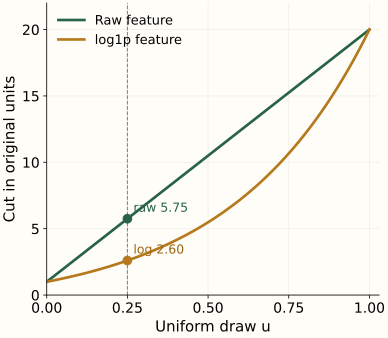

Model Sparse, Heavy-Tailed Telemetry Without Flagging Every Large Customer
Before you start: Isolation Forest draws uniform random splits across the feature coordinates you supply. Its score is only as meaningful as that representation.
Suppose an application emits $2{,}000$ events in a large tenant ($1{,}000$ active users) and $60$ events in a small tenant ($10$ active users). Ranking raw counts flags the large tenant solely for its size. Dividing by active-user exposure reverses the picture: the large tenant is at its ordinary baseline ($2$ events/user), while the small tenant is at $3\times$ that rate ($6$ events/user).
The row defines the behavior you can detect
Let $c_t$ be the seven-day event count and $n_t$ the active-user exposure count for tenant $t$ under a fixed application. Aggregating to one row per application pools numerators and denominators across all tenants, whereas one row per app–tenant pair preserves the local rate:
Against a peer baseline rate of $r_0 = 2.0$ events per active user, the pooled app rate $r_{\text{app}} \approx 2.04$ ($1.02\times r_0$) masks the small tenant's local spike $r_{\text{small}} = \frac{60}{10} = \mathbf{6.0}$ ($3.0\times r_0$) beneath the large tenant's volume ($r_{\text{large}} = \frac{2000}{1000} = 2.0$).
The global rate is near 2. A single row cannot show which tenant changed.
Stabilize low-exposure rates with prior smoothing
When the exposure denominator $n$ is tiny, raw rates $\hat{r} = c / n$ swing wildly from a handful of events (or become $0/0$ when $n = 0$). Empirical-Bayes (prior) smoothing blends the observed counts with $k$ prior exposures at the peer reference rate $r_0$:
where:
- $c$ is the observed event count and $n$ is the observed exposure count in the window,
- $r_0$ is the peer baseline rate ($r_0 = 2$) and $k$ is the prior strength measured in exposure units,
- $w = \frac{n}{n+k}$ is the share of weight placed on the observed rate $\hat{r} = c/n$.
| Profile | Counts $(c, n)$ | Raw rate $\hat{r} = c/n$ | Plugging into $r_{\mathrm{smooth}} = \frac{c + k r_0}{n + k}$ | Weight $w = \frac{n}{n+k}$ | $r_{\mathrm{smooth}}$ |
|---|---|---|---|---|---|
| Large tenant | $c=2000,\; n=1000$ | $\frac{2000}{1000} = 2.0000$ | $\frac{2000 + 10(2)}{1000 + 10} = \frac{2020}{1010}$ | $\frac{1000}{1010} \approx 99.0\%$ | $\mathbf{2.0000}$ |
| Small tenant | $c=60,\; n=10$ | $\frac{60}{10} = 6.0000$ | $\frac{60 + 10(2)}{10 + 10} = \frac{80}{20}$ | $\frac{10}{20} = 50.0\%$ | $\mathbf{4.0000}$ |
| Quiet tenant | $c=0,\; n=1$ | $\frac{0}{1} = 0.0000$ | $\frac{0 + 10(2)}{1 + 10} = \frac{20}{11}$ | $\frac{1}{11} \approx 9.1\%$ | $\mathbf{1.8182}$ |
| No exposure | $c=0,\; n=0$ | Undefined ($0/0$) | $\frac{0 + 10(2)}{0 + 10} = \frac{20}{10}$ | $\frac{0}{10} = 0.0\%$ | $\mathbf{2.0000}$ (prior only) |
(60 + 10 × 2) / (10 + 10) = 4.0000.
A log transform changes the random-cut geometry
For nonnegative counts, $\operatorname{log1p}(x) = \ln(1 + x)$ maps $0 \mapsto 0$ and compresses heavy right tails. Although $\operatorname{log1p}$ is strictly increasing and preserves the sort order of $[1, 2, 3, 4, 20]$, it changes the interval lengths from which Isolation Forest draws uniform splits.
Let $u \in (0, 1)$ be a uniform draw between a node's minimum $x_{\min} = 1$ and maximum $x_{\max} = 20$. In raw coordinates, the span is $[1, 20]$; in $\operatorname{log1p}$ coordinates, the span is $[\ln 2, \ln 21]$. Mapping both cuts back to original units gives:
| Uniform draw $u$ | Raw cut $q_{\text{raw}}(u) = 1 + 19u$ | Rows $\le q_{\text{raw}}$ | Log1p cut $q_{\log}(u) = 2(10.5)^u - 1$ | Rows $\le q_{\log}$ |
|---|---|---|---|---|
| $u = 0.25$ | $1 + 19(0.25) = \mathbf{5.7500}$ | $1, 2, 3, 4$ | $2(10.5)^{0.25} - 1 = \mathbf{2.6002}$ | $1, 2$ |
| $u = 0.50$ | $1 + 19(0.50) = \mathbf{10.5000}$ | $1, 2, 3, 4$ | $2(10.5)^{0.50} - 1 = \mathbf{5.4807}$ | $1, 2, 3, 4$ |
| $u = 0.75$ | $1 + 19(0.75) = \mathbf{15.2500}$ | $1, 2, 3, 4$ | $2(10.5)^{0.75} - 1 = \mathbf{10.6669}$ | $1, 2, 3, 4$ |
Consequently, the probability that the first root cut falls above $4$ and immediately isolates $20$ drops from:

u = 0.25: raw cut 5.7500; log1p cut mapped back 2.6002.

Separate observed zeros from collection gaps and ineligibility
A zero in a feature table can represent four distinct states depending on eligibility, collector coverage, and exposure:
Eligible pair; 7 of 7 days collected; 50 active-user exposures; zero events.
The seven-day count is 0 and the observed rate is 0. This is a measured absence of the event.
Choose a peer reference available at scoring time
| Reference | Question answered | Failure mode |
|---|---|---|
| Global population | Which rows differ from the entire service? | Tenant size and app category dominate raw features. |
| Named peer group | Which rows differ from comparable deployments? | Small groups require fallback to a broader prior $r_0$. |
| Entity's own history | What changed relative to this pair's past windows? | Cold-start pairs lack history; chronic issues enter the baseline. |
Fit peer baselines $r_0$, imputers, and clipping bounds strictly on training windows before scoring later windows (avoiding temporal leakage). The next chapter turns these calibrated telemetry scores into a grouped review queue.
References and further reading
- NumPy: log1p — The nonnegative-count transform and its inverse.
- Liu, Ting & Zhou: Isolation Forest — Uniform random cuts in the supplied feature coordinates.
- OpenTelemetry: metric intervals, resets, and gaps — Collection semantics that must be preserved when constructing event-window features.
- scikit-learn: data leakage — Training-only fitting and consistent application of learned preprocessing.